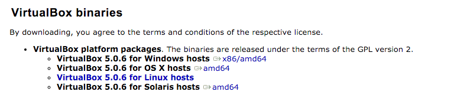
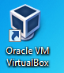
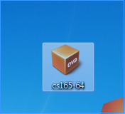
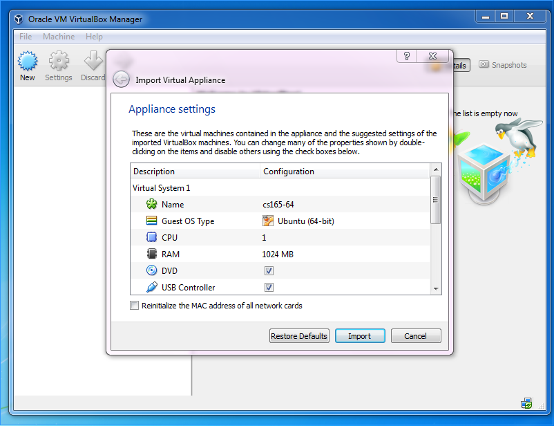
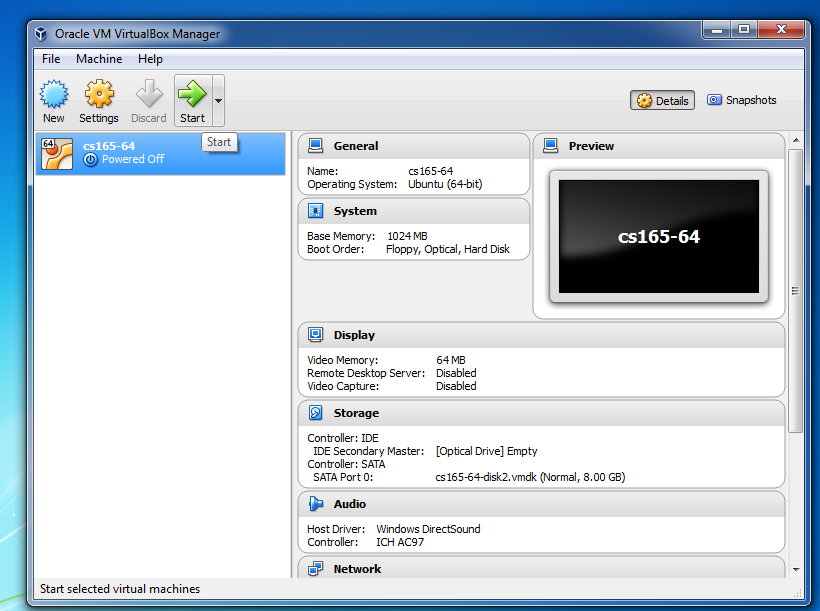
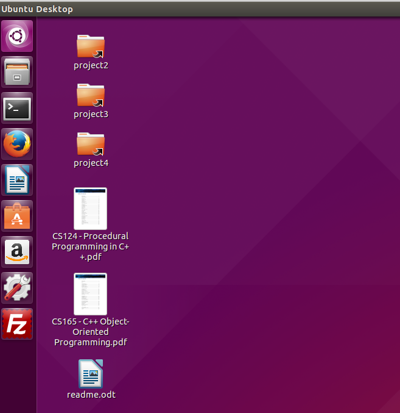
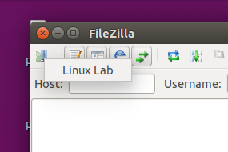
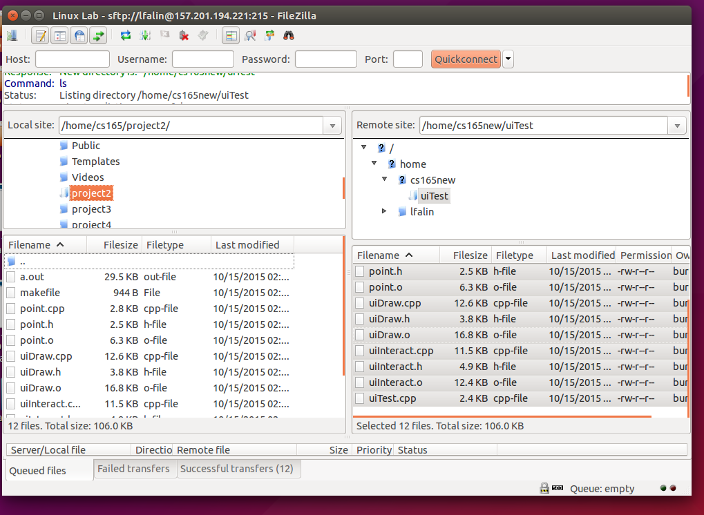
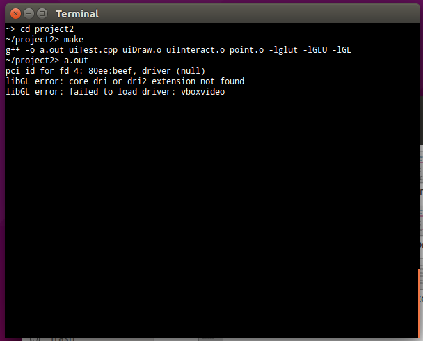

Virtual Machines
A virtual machine program allows you to create a virtual computer inside of your current computer. For example, you can create a Linux computer inside of your windows computer. The Linux virtual machine runs in a seperate window, isolated from the rest of the things installed on your computer.
There are two steps to setting up a virtual machine. First, you need to install a virtual machine emulator, the program that will run the virtual machines. Second, you need to create or install a virtual machine image, the code and other information that makes up the virtual computer you want to run.
Install VirtualBox
There are many virtual machine emulators available. Some are free, others are not. A good option for a free virtual machine emulator is Oracle's VirtualBox software.
If you're running Windows, you'll want to go to the VirtualBox Download page and click the link next to the line that says "VirtualBox for Windows hosts". If you're running a different OS, choose the option for your operating system.
Once you've downloaded the software, double click the installer icon to install VirtualBox. Follow the instructions provided by the installer. We recommend you stick with the default installation options.
Once installation completes, you should see an icon on your desktop that you can use to launch VirtualBox.
Install the Virtual Machine Image
Once Virtual Box is installed, you'll need to download the virtual machine image. This image has been preconfigured with much of the software you'll need for OpenGL development.
Click this link to download the Virtual Machine Image. Save the file someplace that is easy to find, like your Desktop.
Once the virtual machine image has finsihed downloading, double-click it's icon to load it into VirtualBox.
In the window that appears, click "Import", then wait for import to complete.
Test OpenGL on the Virtual Machine
Once the virtual machine image has been imported into VirtualBox, you may now run the virtual machine.
If VirtualBox isn't running, double-click its shortcut icon to start it.
A window should appear showing you a list of virtual machines. Select the CS165 Virtual Machine from the list, then click the Start button at the top of the window.
Wait a minute or so while the virtual machine finishes booting up. You may resize the window as necessary.
At this point, you may receive an error regarding hardware acceleration. If this happens, you will need to configure this setting in the BIOS settings of your laptop. Some laptops (especially older ones) may not support this. The way to change your BIOS settings is different on different devices, but likely you need to push a key, such as F1, when your computer is in the very first stage of booting up. Once in the BIOS settings, you will want to look for a setting such as "Hardware Acceleration", likely under a menu item of "Virtualization" or "Security / Virtualization", then enable this setting. Reboot your device, and proceed with the instructions.
When the desktop appears, click on the red FileZilla icon that is in the quicklaunch bar on the left side of the screen.
In FileZilla, right click the server icon in the upper-right corner and select Linux Lab.
In the login window that appears, type in your username and password.
FileZilla is now connected to the Linux Lab. Navigate to /home/cs241/uiTest by typing that directory path into the remote site bar on the right side of the screen. Then press enter.
Next, change the Local site path to /home/cs165/project2 and press enter.
In the bottom-right pane of FileZilla, you should now see a list of files. Drag all of those files into botton left-hand pane, then close FileZilla.
Click on the black terminal icon in the quicklaunch bar on the left side of the screen to open a terminal.
Change directories to the project 2 folder, execute make, then run a.out.

If all goes well, you should see a window appear with a rotating shape, which can be controlled using your arrow keys.

If you need to use the "sudo" password, it is "cs165".